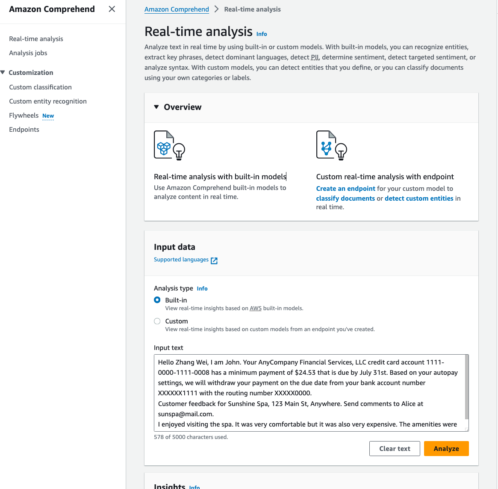

Getting started with Amazon Comprehend
As a beginner, getting started with Amazon Comprehend is a great way to explore the power of natural language processing (NLP) in the cloud. Amazon Comprehend is an AWS service that makes it easy to analyze text and extract valuable insights, such as the sentiment, key phrases, and entities within your documents.
To get started with Amazon Comprehend:
- Explore the AWS Management Console: The AWS Management Console provides a user-friendly interface where you can upload documents, analyze text, and view the results. This is a great way to quickly get started and explore Comprehend's capabilities without writing any code. To get started with Amazon Comprehend, you can access the service through the AWS Management Console. Link to the Amazon Comprehend Console.
- Integrate with AWS SDKs: If you're building an application, you can integrate Amazon Comprehend using the AWS SDK for your preferred programming language, such as Python, Java, or .NET. The SDK provides libraries and APIs that make it easy to leverage Comprehend's features within your application. For more information please see Amazon Comprehend API Reference.
- Utilize the AWS CLI: The AWS Command Line Interface (CLI) is another option for interacting with Amazon Comprehend. You can use the CLI to perform various Comprehend operations, such as detecting entities, key phrases, and sentiment, directly from the command line. For more information please see Amazon Comprehend CLI Reference.
Regardless of the approach you choose, the AWS documentation provides detailed guidance and sample code to help you get started with Amazon Comprehend. I recommend reviewing the relevant documentation to determine the best integration method for your specific use case.